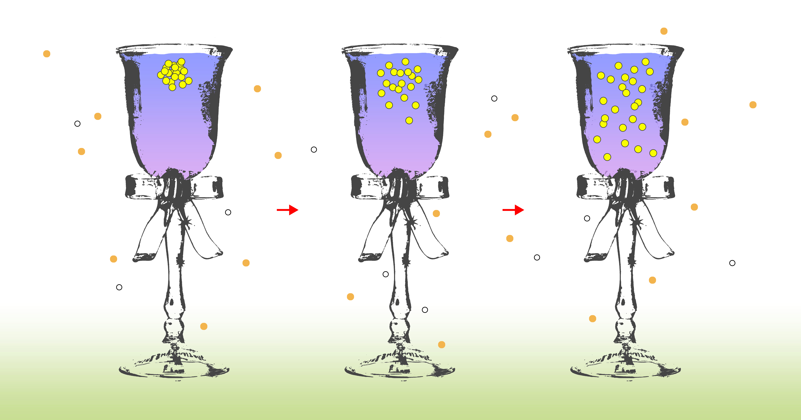
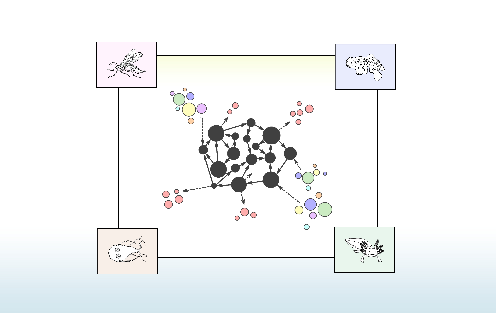
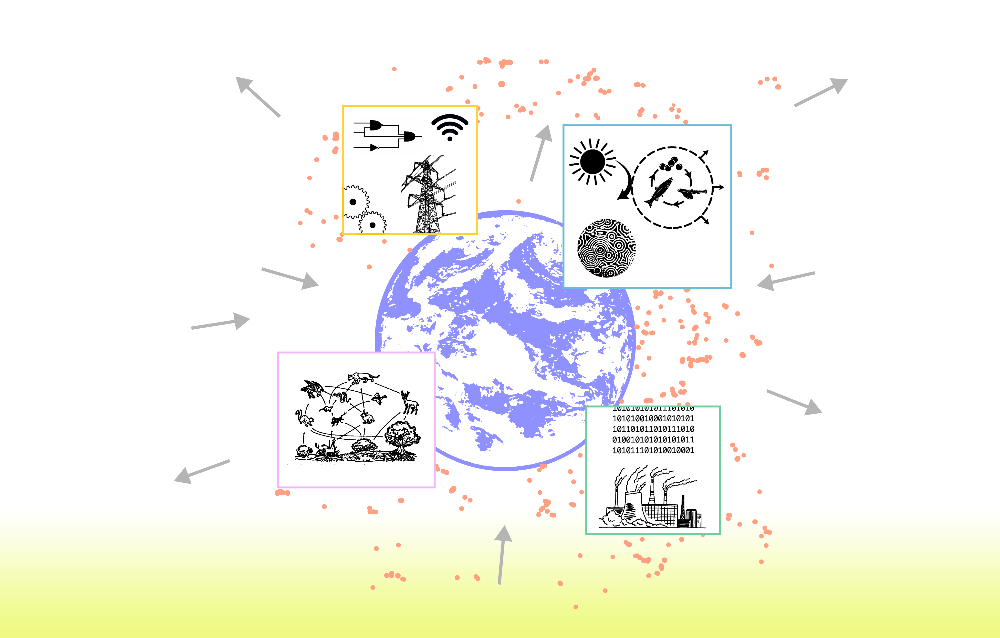

Sections
⧆ Summary
⧆ Biology in the Context of Cosmological Entropy
⧆ Dissipative Systems: From Self-Organization to Autopoiesis
⧆ Entropy and the Directional Trajectory of the Biosphere and Technosphere
⧆ Nonequilibrium Thermodynamics: Biology vs Technology
⧆ Conclusion
⧆ Endnotes
Summary
Originating from nineteenth century physics, the concept of entropy—a measure of disorder, randomness, and/or the dissipation of useful energy—underlay a cosmology where order and complexity were seen as highly improbable phenomena in a universe tending toward chaos and disorganisation. Nearly a century later, theoretical frameworks were developed for understanding the production of entropy as an enabling feature of self-organized complexity in the natural world. These ideas would contribute to reconciling the origins, development, and evolution of life with the principles of a thermodynamic universe. For some, they also provided the conceptual foundations for theorizing about a natural tendency within our thermodynamic universe—one which drives the development of increasingly complex and ordered systems that amplify overall rates of entropy-production and energy dissipation. In this text I chart a path through the aforementioned ideas and present their relevance in framing a relationship between our technological civilization and the Earth system. I then turn toward the possibility and desirability of instantiating a future technosphere aligned with thermodynamic principles of dissipation and entropy-production, drawing on recent developments in bioengineering and synthetic biology to envision a paradigm where technology becomes living matter itself.
Biology in the Context of Cosmological Entropy
The concept of entropy originates from nineteenth century thermodynamics and is meant to describe a measure of disorder, randomness, and/or the dissipation of useful energy in a system. In the most general sense, it’s often associated with the idea that natural processes tend to move toward more disorderly states over time. A few simple examples will serve to illustrate this concept. Consider a drop of ink inside a glass of water. Initially, the molecules which make up the ink are concentrated in a small area. However, as time passes, they disperse and spread throughout the molecules of water, leading to a more disordered and random distribution. Eventually, the molecules will become uniformly distributed within the glass, reaching a highly entropic state of thermodynamic equilibrium. Another example is observed when you place a warm object, such as a cup of hot tea, inside a room with a lower temperature. Over time, the temperature differential between the cup and the room will become equalized as heat, or thermal energy, from the tea transfers to the surrounding molecules in the air of the room. Similar to the dissipation of ink in water, the temperature of the tea and the room together will eventually reach an equilibrium where the entropy of the total system has been increased and heat has been evenly distributed throughout the space.
The latter example of heat flow in a system was precisely what physicist and mechanical engineer Sadi Carnot discovered through his analysis of the efficiency of steam engines [1]: i.e. that heat always moves down a gradient from hotter to colder states. This basic insight would later become the basis for the second law of thermodynamics. The transformation of thermal energy into mechanical energy—as in the case of a temperature differential powering a steam engine—also, perhaps unsurprisingly, involves the dissipation of useful energy into the environment in the form of heat, becoming spread out into the surroundings and therefore incapable of performing work once more.
In the mid 1800s, Carnot’s idea would be refined by Lord Kelvin (William Thomson) and Rudolf Clausius, [2] two seminal physicists who were instrumental in unifying the emerging field and providing formal clarity and rigour to the notion of entropy as well as the first two laws of thermodynamics. Together, these two laws describe a universal tendency toward the dissipation of mechanical energy in a cosmos where the total amount of energy is fixed and conserved, while entropy refers to a measure of the energy in a system which is no longer available for work. Physicist Ludwig Boltzmann supplemented these ideas with a statistical interpretation of the second law which defined the tendency for orderly components of a system—particularly molecules in a box—to spread out toward more probable arrangements, or dispersed and disorderly configurations, until they approach a state of elevated entropy and thermodynamic equilibrium. It follows, therefore, that the spontaneous generation of orderly configurations from disordered states was considered by Boltzmann to be infinitely improbable. [3] These ideas played a significant role in shaping a cosmological model where living systems were understood to be anomalous, improbable, and contingent accidents in a universe running down toward a “heat death”, [4] with all its parts drifting toward increased disorder and degradation. [5]
However, unlike purely physical, non-living processes, biological systems seem to strike a peculiar balance between the second law of thermodynamics and the ability to generate, maintain, and propagate complexity and order. This kind of activity appears at odds with the above description of the nature of physical reality: if the state of the universe is thought to be lurching toward an increase in cosmic disorder—as the second law of thermodynamics is often interpreted—why then do we observe an abundance and increasing development of structure, order, organization, and complexity within our planet’s biosphere?
During the last century, the notion of living systems as open dissipative systems operating in far from equilibrium conditions has emerged as a compelling theoretical framework to clarify this enigmatic property of biology and reconcile it with the laws of thermodynamics. [6]
In this view, living systems engage in a dynamic interplay with their environment, selectively exchanging matter and energy with their surroundings in order to generate the work required to produce and maintain a self-organized state of organic individuation and local entropy minimization. Put plainly, biological systems transform external resources into internal order.
The process of localized entropy reduction embodied by self-organized living systems is non-contradictory with respect to the physical laws it seems to elude, since the flows of matter and energy which instantiate organic form necessitate the exogenous displacement of entropy from the living process in the form of waste and heat. This in turn, consequently produces a global net increase of entropy within the surroundings of a given biological system. In his pioneering work, What Is Life? physicist Erwin Schrödinger offered one of the earliest articulations of this general idea. In Schrödinger’s words, what a biological system “…feeds upon is negative entropy. Or, to put it less paradoxically, the essential thing in metabolism is that the organism succeeds in freeing itself from all the entropy it cannot help producing while alive.” [7]
In Schrödinger’s writing, these intuitions about the generation and stabilization of order in organic systems are supported by little empirical knowledge and expressed primarily through statistical equations and speculations about the organism “feeding” upon negative entropy or “sucking orderliness from its environment.” [8] Schrödinger would ultimately connect these ideas to the unique arrangement of molecules within “aperiodic solids” with hereditary properties, a hypothesis which would later inform geneticists in their understanding of the structure of DNA and its informational qualities. However, subsequent work by researchers in biochemistry, biophysics, theoretical biology, complexity science, and other related areas, would also build upon Schrödinger’s impressions to flesh out a more robust theory of the relationship between non-equilibrium thermodynamics, self-organization, metabolism, and the complexity and order found in biological systems.
In the following section, I turn to some of this work to provide an overview of the entangled and dialectic nature of entropy and self-maintenance, organized complexity, and life. In doing so, I will highlight a spectrum of self-organizing processes by tracing a continuum from simple dissipative systems to the thermodynamic principles underpinning the activity and organization of living systems.
Dissipative Systems: From Self-Organization to Autopoiesis
Physical chemist Ilya Prigogine’s work on complex dissipative systems is arguably one of the most significant contributions to the line of thought connecting thermodynamic principles with the generation of natural order. In a nutshell, dissipative systems—a term coined by Prigogine and his colleagues in a number of publications during the late 1960s and first introduced at a conference on theoretical physics and biology [9]— are complex dynamic structures operating far from conditions of thermodynamic equilibrium. These open systems tend to spontaneously self-organize into spatiotemporally ordered processes whose metastable steady states are reproduced by exchanging energy and matter with their environments. Such systems can be both naturally occurring, like whirlpools, flames, tornados, or Jupiter’s Giant Red Spot, as well as artificially generated, as in the case of Bénard cells. [10] In a recent paper on the topic of Schrödinger’s What Is Life? lectures, theoretical biologist Stuart Kauffman discusses the illustrative example of Bénard cells in some detail, which is worth quoting at length:
“…there is a pan with a shallow layer of viscous liquid … heated slowly from below, creating a temperature gradient, hotter on the bottom than top of the fluid. The temperature gradient induces an overall heat flow to the environment … When the temperature gradient surpasses the Rayleigh threshold, convective cells arise and dissipate heat more effectively. The convective cells are the Bénard cells … [whose] patterns are sustained by the continuous flow of energy through the system that results by heating the pan from below.” [11]
Much like Bénard cells, cyclones such as tornados or hurricanes, and other similarly structured natural phenomena like whirlpools or turbulent flow, maintain the emergent macroscopic patterns which constitute their dynamical form through the incessant flux of their components, i.e. via the constant flow of energy and matter through the system supplied by an energy gradient. In other words, the structural identity of a dissipative system is held constant by a continuous flux of energy and matter from the environment, transformed into order locally and displaced as entropy extrinsically.
We can see here the beginnings of a theory of natural phenomena which describes the tendency for order to emerge from the enabling conditions of a thermodynamic universe. Not only is the relationship between entropy and life considered non-contradictory, it is in fact dialectically entangled such that the production of entropy acts as a generative natural condition for the emergence of order and complexity and not simply disorder and equilibrium. In other words, entropy functions as a progenitor of dynamic order for a certain class of physical systems which leverage or exploit, so to speak, the same thermodynamic principles which lead to disorganization and decay in other contexts. The spontaneous development of complexity and organization is therefore equally as natural as the propensity for chaos and disorder in a universe whose activity conforms with thermodynamic laws. [12]
This theoretical framing is also thought to provide a basis for understanding certain fundamental qualities of biological systems as well. For instance, biophysicist Jeremy England has suggested that non-equilibrium physical systems tend to vary in their structure over time in a manner which correlates with their ability to optimally absorb and dissipate energy from their environment. England bridges physics and biology by connecting this historical and quasi-adaptive property with the selective evolutionary dynamics of living systems, [13] proposing maximal entropy production as a common principle driving the activity and morphology of self-organizing physical systems, as well as minimal molecular systems and more complex biology. Stuart Kauffman has also offered a related narrative in his work on self-organization and complexity, building on various frameworks in the complexity sciences to study the relationship between laws of spontaneous order and self-organization and questions regarding the origin and evolution of life. For Kauffman, the universe supplies order for free as a result of deeply natural laws shaping the behaviour of non-equilibrium systems. [14] In this view, living systems are seen as expressions of the coupling of spontaneous, self-organizing complexity and the dynamics of evolutionary selection.
Similarly, environmental scientist Eric Schneider and theorist Dorion Sagan have maintained that the tendency for non-equilibrium systems to optimize for dissipation, via their exploitation of various energy gradients, is fundamental to all complex structures and processes of biological reality—from the origin of life to evolution and ecology. [15] The authors elevate this tendency to the status of a natural principle, arguing that biological systems are enabled by the same physics of energy flow operating in non-living dissipative systems: “[non-equilibrium thermodynamics] connects life to nonliving complex systems … life’s complexity is a natural outgrowth of the thermodynamic gradient reduction implicit in the second law.” [16] Echoing this sentiment in an earlier publication, biochemist Jeffrey Wicken has also linked thermodynamics with the historical and ecological development of molecular and organismal complexity, arguing that “life’s emergence was not at all accidental” but arose quite naturally from “the free energy gradients (solar and geothermal) of prebiotic Earth”, discharging these gradients in the production of entropy during its continued evolutionary diversification. [17]
We can also turn to Prigogine once again to explore a related set of ideas. One crucial theoretical development to emerge from Prigogine and his collaborators’ work on dissipative systems was the Brusselator, a theoretical model for an autocatalytic system. [18] Autocatalysis—or a process whereby one or more reaction products act as a catalyst for the same reaction—can be seen as a minimal requirement for defining living systems and their common metabolic and/or replicative properties. [19] These kinds of looping reaction cycles are thought to be vitally important for describing self-organizing far-from-equilibrium thermodynamic structures as well as certain regulatory mechanisms underpinning metabolic functioning and specific organizational processes unique to biological systems. [20] Others have formulated analogous notions through the lens of their own research, most notably Kauffman’s theory of autocatalytic sets and neuro-anthropologist Terrence Deacon’s model of the autogen. With the latter, a synergetic loop between multiple thermodynamic self-organizing processes generates the conditions for the maintenance and replication of a self-enclosed system and its autocatalytic components. [21] A similar logic informs the idea of autocatalytic sets, whereby the general metabolic activity and self-replicating behaviour which underlie all organismic activity is posited as a typical outcome of the dynamic stability of autocatalytic networks. [22]
A handful of thinkers have also touched more specifically on the structural and organizational relationship between the thermodynamic properties of open systems and the continuous flow of energy and matter which sustains the self-organizing, self-maintaining, and self-producing behaviours of minimal biological systems. An early and highly influential contribution to this area can be found in the research of neurobiologists Humberto Maturana and Francisco Varela, whose work on autopoiesis highlights not only the closed recursiveness of a self-producing network of molecular relations (much like autocatalytic sets) but the necessary and enabling condition of such a system to remain open to the flow of matter and energy through it. [23] That is to say, a fundamental property of biological organization is its continuous realization through the process of incessant material turnover.
Continuing in this tradition, theoretical biologists Alvaro Moreno and Matteo Mossio assert the need to ground this unique property of biology in thermodynamics, qualifying living systems as “dissipative systems dealing in a constitutive way with a thermodynamic flow that traverses them.” [24] This perspective is also reflected in a recent compilation of essays titled Everything Flows, edited by philosophers and historians of biology John Dupré and Daniel Nicholson. In their introduction, Dupré and Nicholson write of the organism's existential condition of needing to be continuously thermodynamically active in order to exist. [25] Biological systems must metabolize matter from their surroundings to acquire and dissipate energy, rebuild and replenish their cells, and maintain their identity in a steady state. In other words, an organism's stability derives from a continuous circulation of its components driven by the non-equilibrium dynamics of dissipating energy acquired from its environment. Like the Bénard cell, the maintenance of organized and ordered living states, or dynamic biological stability, requires the constant thermodynamic stream of energy through a system—biological entities systematically manage and constrain these flows, dissipating energy so as to maintain themselves and their organization.
Philosopher Rod Swenson has also explored related ideas in his work on the thermodynamics of self-organization, ecology, and evolution. In his research, Swenson expounds upon a notion of autocatakinesis, or “identity through flow” [26], whereby both living systems and certain kinds of self-organizing physical systems maintain the coherence of their dynamic spatio-temporal order through a circular causal regime governed by far-from-equilibrium thermodynamic conditions. Swenson draws on the likes of Prigogine and Shrödinger, as well as philosophers and scientists such as Heraclitus, Gottfried Wilhelm Liebniz, and Ludwig Von Bertalanffy, to stress the connection between dissipative systems and living beings, both of which are open non-equilibrium systems whose structural and organizational identity is constituted by continuous coordination of its parts via the relentless flow and degradation of energy and matter from their respective environments. [27]
A relatively common theme among the authors referenced above is the idea that there is some directional trajectory implicit in the emergent self-organizing and dissipative properties of non-equilibrium systems. That is to say, many of these thinkers champion the view that life and all its various features are inevitable outcomes of a physical reality shaped by thermodynamic principles. This lies in contrast with common cosmological interpretations of entropy among physicists in the late nineteenth and early twentieth century which saw life as an extremely improbable and aberrant phenomenon that was inconsistent with the laws of physical reality. For some, this alternative view motivates theoretical explorations of the relationship between thermodynamics and the origins of rudimentary forms of intelligence, meaning, and/or cognition in living beings. [28] For others, an acceleration in the rate of entropy production and energy transformation realized by the history of biological complexification also points to a tacit purposiveness in living systems of all scales to develop toward increasingly sophisticated forms of energy exploiting and dissipation. It is the latter of such views which I will describe in the following section, connecting it with theoretical frameworks such as Gradient Reduction Theory and the Maximum Entropy Production Principle, and relating these perspectives to ideas regarding planetary-scale energy transformations in the development of both natural and technological global spheres.
Entropy and the Directional Trajectory of the Biosphere and Technosphere
As we’ve seen, a handful of researchers interested in the relationship between life. and open, dissipative, nonequilibrium thermodynamic systems also seek to align their ideas with an historical or evolutionary framework of some kind. [29] In the section that follows, I will highlight a few examples of such thinking, each of which adopts a relatively unique approach to this theme, yet all of whom share a common theoretical foundation in the dissipative properties of far-from-equilibrium thermodynamics. I will then highlight the relevance of such thinking for framing the relationship between the Earth system and our modern technological civilization.
One expression of this evolutionary, biospheric perspective of non-equilibrium systems is Gradient Reduction Theory (GRT), proposed by Dorion Sagan and Earth scientist Jessica Hope Whiteside in their contribution to a collection of essays regarding thermodynamics and the purpose of life. [30] In this publication, Sagan and Whiteside explore the idea that non-equilibrium thermodynamics connects purely physical flow structures to biological processes and systems of varying degrees of complexity—from prokaryotic metabolism to complex animals and the biosphere, or “Gaia”, itself. Additionally, these biological systems are thought to be long-evolved instantiations of an historical inclination belonging to all natural processes on Earth: i.e. a tendency in the evolutionary development of far-from-equilibrium systems to accelerate increasingly efficient means of entropy production or energy dissipation and transformation. [31]
For instance, Sagan and Whiteside propose that the widespread proliferation of humans relative to other species “is in large part due to … a much enhanced ability to identify and deploy the food and other gradients necessary to move agricultural and technical civilization into the material evolutionary form which is humanity.” [32] They also argue that the thermodynamic imperative to exploit energy potentials points not only to “the process of life’s origination…” but also a directionality to life’s development at the planetary scale, in the form of “…growth (increase in biomass), reproduction, increase in respiration, energy efficiency, number and types of taxa (biodiversity), rates of circulation of elements, numbers of elements involved in biological circulation, and [an] increase in intelligence…” [33] This sentiment is repeated in Sagan’s 2016 article Möbius Trip: The Technosphere and Our Science Fiction Reality, wherein he writes: “energy-driven evolution shows trends ranging from expansion of the area inhabited by life to increase in respiration efficiency … to increase in sensory modes, increase in information processed, and increase in energy stored, commandeered, and deployed in life’s operations at Earth’s surface.” [34] For Sagan, this suggests “…a more-than-human, thermodynamically driven, ecosystemic increase in biodiversity, net intelligence, perceptual and metabolic modes … over evolutionary time.” [35]
We find a related perspective contained in the idea of the Maximum Entropy Production Principle (MEPP). According to this view, non-equilibrium systems will develop toward optimizing for states where the rate of entropy production via energy flux and dissipation is maximized given their environmental constraints. [36] In addition to this generalized formulation, proponents hold that a variety of non-trivial features in the evolution of life can be traced to this thermodynamic property of open systems. Physicist and mathematician Leonid Martyushev has published extensively on the topic, drawing from the work of mathematical biologist Alfred Lotka, Earth systems scientist Axel Kleidon, ecologist Howard Odum, and others to explore the relevance of the MEPP in describing evolving biological systems. For Martyushev, the MEPP is “the most important principle explaining the direction (progression) of biological and technological evolution” as it corresponds with “the increase in complexity of living creatures in the course of evolution, the emergence of human beings, and the entire course of the development of our civilization (from humans that started using fire to humans widely using oil fuel and atomic energy).” [37] Increases in the complexity and organization of living systems—from microbes to metazoans, ecosystems, and civilizations—are thought to develop in accordance with this common principle, whereby “increasing the metabolic rate in order to maximize the consumption of free energy” drives “organisms [to] gradually become more complex in a natural way.” [38]
In addition to these evolutionary explanations, contemporary advocates of the MEPP such as Martyushev, Kleidon, and Odum also attest to the use of this theoretical framework in describing the activity of Earth system functioning and the dynamics of energy flow through other large complex systems that are products of life’s activity, such as societies and ecological networks. [39] The scope of theories such as GRT and the MEPP is therefore broad enough to address questions related to the origin of life, its adaptive historical development, and the various scales of its hierarchical organization—from bacteria to planetary civilization. At their highest strata of application, these views encourage us to see the development and operation of large-scale biospheric, social, and technological organization in accordance with a natural principle driving the energetic dynamics of non-equilibrium systems.
What we have then, are various researchers working in areas related to physics, chemistry, biology, philosophy, complex systems, and Earth sciences who have developed kindred theoretical frameworks for understanding the production of entropy as an enabling feature of self-organized complexity in the natural world. From this perspective, spatiotemporally ordered systems tend to emerge spontaneously as a means to degrade energy at elevated rates, with their recursive self-organized complexity facilitated by a continuous flux of matter and energy from the environment. Living systems are similarly instantiated and have evolved more complex and specific means of intentionally locating, exploiting, and dissipating free energy in order to self-produce, maintain, and replicate their organizational identity. Phenomena such as this can therefore be understood as a natural outgrowth of the second law of thermodynamics, underpinning nonequilibrium systems both nonliving and living alike.
This principle of energy dissipation may also be implicated in the growth and adaptive development of increasingly complex living systems and certain products of their activity. This is thought to include evolutionary developments in organismal complexity, ecosystemic biodiversity, social organization, and technological systems, and their total contribution to an expanded rate of energy transformation occurring on this planet. In other words, adopting the aforementioned perspectives on the role of entropy in the generation and development of biological order might allow us to understand the activity of life at multiple levels—including aspects of human civilization such as the technosphere [40]—in accordance with the conditions of a thermodynamic universe. In a sense, the universal thermodynamic principle of entropy production lies at the heart of a worldview which naturalizes life’s activity, situating it in a quasi-purposeful cosmos directed toward generating increasingly sophisticated dissipative systems.
For the human species, a theory such as this could have a significant impact on how we frame the relationship between our technological civilization and Earth system functioning. Insofar as we can talk about the evolutionary development of human technologies, the pace at which such change has occurred—and will likely continue to occur—is significantly more rapid than most phylogenetic change in the history of biological systems. [41] This accelerated change in our technological landscape has also been at the center of profound Anthropogenic transformations in multiple planetary spheres, while simultaneously imposing conditions of critical interdependence between our species, the biosphere, and the continued viability of a functioning technosphere. [42] Situating the technosphere within the context of a thermodynamic drive toward enhanced rates of dissipation might therefore provide some sense of guidance as to how we might ensure the viability of our technological systems by aligning aspects of their development with at least one crucial and deeply natural feature of planetary life.
Indeed, some researchers have already made efforts to explore the relationship between planetary technology, thermodynamics, and the Anthropocene, such as Axel Kleidon, who has written about the energetics of the technosphere, “…the ultimate thermodynamic imperative to evolve to states of greater energy conversions and higher levels of entropy production at the planetary scale…”, and the Earth system’s need for “…the technosphere to make this evolutionary step to the next thermodynamic level of greater energy conversions.” [43] How then might the technosphere complement the thermodynamic imperative that biological systems seem to embody so effectively? How successful is the technosphere at dissipating energy and how does it compare to living systems in this regard? In the final portion of this paper, I speculate about this particular conceptual relationship between the Earth’s technosphere and biosphere by turning my focus toward the material constitution of human technological artifacts. The following considerations will be used to structure and guide this inquiry:
◾ How does current human technology differ from evolved, open, living nonequilibrium systems?
◾ Could modelling our technology on the dialectic of entropy and life be advantageous for the viability of the technosphere?
◾ How might theories of energy dissipation in living systems guide the design of human technology?
Nonequilibrium Thermodynamics: Biology vs Technology
◾ How does human technology differ from evolved, open, living nonequilibrium systems?
Many of the authors previously cited give us good reason to distinguish strongly between living systems such as organisms, and artifactual systems such as machines. One major difference often emphasized is the dynamicity of biology, compared to the static nature of mechanical artifacts. For instance, Rod Swenson writes of machines being constituted by the static order of their functional components, all of which have been designed by an artificer. In contrast with this, living systems are defined by their dynamic order, whose identity is “…constituted through the incessant flux of their components, which are continuously being replaced from raw materials in their environments and being expelled in a more dissipated form.” [44] All known extant human artifacts, machines, or other technological devices and systems lack this metastable, autokatakinetic property of being enabled, self-produced, and self-maintained by the dynamics of energy dissipation.This difference has also been described in terms of the transitional and stable identities of biological systems and machines, respectively. Daniel Nicholson writes that while “an organism naturally maintains itself in a state of continuous flux” as a “temporary manifestation of the self-producing organizational unity of the whole”, a machine and its components “remain distinct, stable, and identifiable over time.” [45] That is to say, living systems are grounded in the thermodynamic principles which both constrain their behaviour and enable them to “break down the materials they take in from their environment in order to acquire the energy they need to rebuild their constituents … maintain themselves in a steady state far from thermodynamic equilibrium … and dissipate energy and excrete material wastes back into their environment.” [46] Human technology does not function this way in any credible sense, nor is its structural or organizational identity comparable to the processual dynamism of open dissipative systems described here. [47]
Framed alternatively, biological systems are ascribed as having a much greater degree of autonomy than machines. Part of what it means for dynamic organic order to be constituted by a flux of energetic and material processes is that open systems of this kind acquire self-organizing and self-producing properties and functions which contribute to the system’s own maintenance. By contrast, nearly all of our technological systems are allopoietic or heteropoietic: i.e., many “have as the product of their functioning something different from themselves” and all must rely on human agency, design, and intervention to become organized, perform functionally, and persist through time. [48]
Another salient difference between living and technological systems can be illustrated by their respective energy dissipation rates. Drawing considerably on the work of environmental scientist Vaclav Smil, philosopher Thomas Nail has argued that despite an exponential rise in human-induced energy expenditure during the last century the technosphere is still orders of magnitude less effective than the biosphere when it comes to rates of energy expenditure and dissipation, paling in comparison to biodiverse ecosystems, particular old-growth forests. [49] For Nail, both vegetal and animal life are “massive energy-degrading [processes] of radical expenditure and waste”, with plants acting as “powerful dissipative systems that degrade solar energy into low-grade heat energy, water, and oxygen” and animals dissipating 80–90% of the energy they consume as heat. [50] Unlike these processes, our present human civilization has only recently expanded its ability to consume energy, not dissipate it [51]—one might say that our technological systems tend to optimize for power input and total consumption, and not for energy dissipation. That is to say, despite an unprecedented era of accelerated, energy-intensive technological development—one which characterizes the growth of the modern technosphere—our contemporary technological systems appear largely incapable of matching the rates of energy transformation and expenditure measured in the highly entropic activity of the biosphere.
◾ Could modelling our technology on the dialectic of entropy and life be advantageous for the viability of the technosphere?
Foregrounding quantitative comparisons between the entropic properties of the technosphere and the biosphere is especially interesting because it suggests that what some might see as a kind of “entropic” destruction brought about by our contemporary fossil-fuel civilization is in fact quite different from the more widespread entropy-amplifying processes which have characterized the history of life on Earth. If anything, humans have reduced the planet’s overall rate of expenditure by eradicating dissipative biological systems, indirectly replacing them with technological systems of inferior entropy-producing capabilities. Nail’s recent book Theory of the Earth builds on this idea in order to advance an ethics of dissipative energy expenditure which advocates for bringing environmental politics and philosophy into alignment with the thermodynamic principles shaping biospheric energy flow. I wish to argue in a similar direction: that human technology might benefit from being aligned with the principles of nonequilibrium thermodynamics shaping the form and activity of biological systems.
Orienting ourselves toward this possibility could reframe our relationship to technological systems much like how theories regarding the thermodynamic principles of self-organization and biological order reframed life as a natural and expected feature of the cosmos. That is to say, it may give us reason to see the potential for technology to become more like the complex natural systems which appear to spontaneously emerge from, and thrive in, a thermodynamic universe. At the very least, on a local scale, it may motivate us to imagine how we might engineer the technosphere and its artificial components to be more reciprocally connected with the ubiquitous material and energy flows shaping bio-terrestrial expenditure. In both cases, human technology could be guided toward a paradigm where it operates in harmony with, and not distinct from or hostile to, natural living systems. At the core of this transformation in our theories and applications of technology would be the objective to amplify its dissipative properties in a manner that reflects or reproduces the activity of organic, open, nonequilibrium systems.
◾ How might theories of energy dissipation in living systems guide the design of human technology?
This question is a highly speculative prompt, to be sure, and should be considered as no more than a thought experiment. I do not purport to offer any precise or concrete proposals for how one might go about developing living technology with thermodynamic properties that accurately correspond to those exhibited by the biological systems discussed earlier in the text. Instead, I wish to provide only a general sketch of this prospective technological future by pointing to a few promising developments in bioengineering and synthetic biology, briefly elaborating on why these advances warrant further attention in the context of our exploration of the dialectical relationship between entropy and open nonequilibrium systems.
One area of interest which may prove to be relevant to this conceptual endeavour is synthetic morphology. This emerging sub-discipline of synthetic biology began to take shape around 2008, when developmental biologist Jamie Davies published a paper outlining the prospects of engineering “self-constructing assemblies of cells.” [52] It could be said that practitioners in the field are generally interested in understanding the rules of morphogenesis and their application in the construction of devices using, or entirely comprised of, engineered living tissues. [53] In other words, these researchers are interested in how living matter self-organizes, studying the unique properties of individual cells and the collective behaviour they exhibit when assembling into various pluricellular configurations, as well as using that knowledge to develop new hybrid living-technological systems. [54]
While thermodynamics does not currently play much of a role in this work, for our purposes, developments in synthetic morphology point toward a horizon where technological systems are brought into even closer proximity with living systems—not merely in an attempt to emulate biology, as is often the case in areas of biomimetic design, but by comprehensively instantiating novel engineered systems which are composed of living matter itself. Learning to think and design technologically using “agential materials” [55] would at least imply having to work with the material and energetic properties that underpin relevant characteristics of nonequilibrium living systems—characteristics such as self-organization, autopoiesis, adaptivity, and agency. [56] Efforts in this field might also chart a path toward the symbiotic integration of a new class of biological artifacts into the broader dissipative flows that characterize the thermodynamic activity of organisms and ecologies.
This nascent field complements similar aims in other areas of synthetic biology, reflecting a general disposition toward engineering technological systems using organic components and processes. These include applications in cellular agriculture and other bioeconomic platforms, [57] experiments in the design and construction of built environments grown using engineered living material, [58] as well as various efforts to transform industrial processes involved in energy and fuel production, chemical, pharmaceutical, and material manufacturing, and waste remediation via the commercial deployment of metabolically engineered molecular systems. [59] Similarly, advances in biological computing at both the hardware and software level gesture again to the potential for an emerging technosphere which could operate congruously with the dynamics of living systems due to being biologically instantiated itself. A notable example of the former is the development of microprocessors powered by photosynthetic algae, [60] while the latter has been demonstrated by early research into the use of stem cell-derived neural organoids in biological computing. [61]
Once more, although thermodynamics does not appear to be central to the study, development, and evaluation of these advances in synthetic biology, the general impetus to explore the frontiers of engineered systems comprised of biological matter is a desired direction in the path toward living technology with embodied dissipative and metabolic properties. [62] It may indeed be one of the first steps toward the construction of a technosphere which can begin to match the amplified entropy-producing features of organisms and ecosystems. As researchers like Nail have indicated, a significant fraction of the planet’s most effectively dissipative systems (living ecosystems) have been decimated during the period of accelerated technological and economic growth which defines the Anthropocene, lowering the planet’s total rate of entropic expenditure. [63] This loss cannot be compensated for by our contemporary technosphere alone, as its dissipative properties are orders of magnitude less effective than the terrestrial biosphere’s. By the same token, the planet’s biological systems may not be capable of evolving quickly enough to respond to this change either, further deferring the emergence of higher-level systems of entropy production on the planetary scale. So, along with the many practical measures we ought to take as a civilization to compensate for this transformation, populating our planetary system with engineered, hybrid, bio-technological artifacts embodying the properties of open nonequilibrium systems and processes might be a fruitful avenue for post-Anthropic terraforming in service of restoring and ideally augmenting the thermodynamic imperative of net global dissipation rates, however abstract or imaginative this may seem at present.
Conclusion
In surveying a literature on the notion of entropy and its enabling role in the generation of self-organized complexity in open nonequilibrium systems, a throughline can be traced from non-living physical systems to forms of biological organization and activity at multiple scales—from individual autopoietic cells to planetary systems. The view that the conditions of a thermodynamic universe provide an impetus to develop increasingly sophisticated vehicles for maximizing planetary dissipation rates provides a conceptual paradigm for thinking about connections and divergences between two global energetic systems: the biosphere and the technosphere. Drawing on theoretical and applied aspects of recent developments in bioengineering and synthetic biology, we might aspire to imagine a future technosphere comprised of living matter, whose material and energetic properties are more closely aligned with the thermodynamic principles of dissipation and entropy production that permeate all natural ordered systems.
Endnotes
[1] Carnot, Rudolf Clausius, and William Thomson Baron Kelvin, The Second Law of Thermodynamics: Memoirs by Carnot,
Clausius, and Thomson (Harper & Brothers, 1899).
[2] Carnot, Clausius, and Kelvin.
[3] Ludwig Boltzmann, “The Second Law of Thermodynamics,” in Theoretical Physics and Philosophical Problems: Selected
Writings, ed. Brian McGuinness, Vienna Circle Collection (Dordrecht: Springer Netherlands, 1974), 13–32,
https://doi.org/10.1007/978-94-010-2091-6_2.
[4]
[5] “Lord Kelvin | On the Age of the Sun’s Heat,” accessed June 4, 2023,
https://zapatopi.net/kelvin/papers/on_the_age_of_the_suns_heat.html; “NASA - What Is the Ultimate Fate of the
Universe?,” accessed June 4, 2023, https://map.gsfc.nasa.gov/universe/uni_fate.html.
[6] Stephen Ornes, “How Nonequilibrium Thermodynamics Speaks to the Mystery of Life | PNAS,” accessed June 4, 2023,
https://www.pnas.org/doi/10.1073/pnas.1620001114.
[7] Erwin Schrödinger, What Is Life? The Physical Aspect of the Living Cell with Mind and Matter & Autobiographical
Sketches (Cambridge University Press, 2013).
[8] Schrödinger.
[9] René Lefever, “The Rehabilitation of Irreversible Processes and Dissipative Structures’ 50th Anniversary,”
Philosophical Transactions of the Royal Society A: Mathematical, Physical and Engineering Sciences 376,
no. 2124 (June 11, 2018): 20170365, https://doi.org/10.1098/rsta.2017.0365.
[10] Rod Swenson, “Autocatakinetics, Evolution, And the Law of Maximum Entropy Production: A Principled Foundation
Toward The Study of Human Ecology,” Advances in Human Ecology 6 (1997): 1–47; E. B. P. Tiezzi et al., “Dissipative
Structures in Nature and Human Systems,” in Design and Nature IV, vol. I (DESIGN AND NATURE 2008, Algarve, Portugal:
WIT Press, 2008), 293–99, https://doi.org/10.2495/DN080301; John Dupré and Daniel J. Nicholson, Everything Flows:
Towards a Processual Philosophy of Biology (Oxford University Press, 2018).
[11] Stuart Kauffman, “Answering Schrödinger’s ‘What Is Life?,’” Entropy 22, no. 8 (July 25, 2020): 815,
https://doi.org/10.3390/e22080815.
[12] Ilya Prigogine and Isabelle Stengers, Order Out Of Chaos: Man’s New Dialogue With Nature (New York, NY:
Bantam Books, 1984); Dorion Sagan and Eric D. Schneider, Into the Cool Energy Flow, Thermodynamics, and Life
(University of Chicago Press, 2005).
[13] Nikolay Perunov, Robert A. Marsland, and Jeremy L. England, “Statistical Physics of Adaptation,” Physical Review
X 6, no. 2 (June 16, 2016): 021036, https://doi.org/10.1103/PhysRevX.6.021036.
[14] Stuart Kauffman, At Home In The Universe: The Search for the Laws of Self-Organization and Complexity
(New York, NY: Oxford University Press, 1995).
[15] Sagan and Schneider, Into the Cool Energy Flow, Thermodynamics, and Life.
[16] Sagan and Schneider.
[17] Jeffrey S. Wicken, “Evolution and Thermodynamics: The New Paradigm,” Systems Research 6, no. 3 (1989): 181–86,
https://doi.org/10.1002/sres.3850060301.
[18] Ilya Prigogine, From Being To Becoming: Time and Complexity in the Physical Sciences (New York: W. H.
Freeman and Company, 1980).
[19] Olga Taran and Günter von Kiedrowski, “Autocatalysis,” in Encyclopedia of Astrobiology, ed. Muriel Gargaud
et al. (Berlin, Heidelberg: Springer, 2011), 128–29, https://doi.org/10.1007/978-3-642-11274-4_138.
[20] Prigogine and Stengers, Order Out Of Chaos: Man’s New Dialogue With Nature.
[21] Terrence W. Deacon, Alok Srivastava, and Joshua Augustus Bacigalupi, “The Transition from Constraint to Regulation
at the Origin of Life,” Frontiers in Bioscience-Landmark 19, no. 6 (June 1, 2014): 945–57,
https://doi.org/10.2741/4259.
[22] Stuart A. Kauffman, “Cellular Homeostasis, Epigenesis and Replication in Randomly Aggregated Macromolecular
Systems,” Journal of Cybernetics 1, no. 1 (January 1, 1971): 71–96, https://doi.org/10.1080/01969727108545830.
[23] H. Maturana, “Autopoiesis, Structural Coupling and Cognition: A History of These and Other Notions in the Biology
of Cognition,” Cybernetics & Human Knowing 9, no. 3–4 (March 1, 2002): 5–34; F. G. Varela, H. R. Maturana, and
R. Uribe, “Autopoiesis: The Organization of Living Systems, Its Characterization and a Model,” Currents in Modern
Biology 5, no. 4 (May 1974): 187–96, https://doi.org/10.1016/0303-2647(74)90031-8.
[24] Alvaro Moreno and Matteo Mossio, Biological Autonomy: A Philosophical and Theoretical Enquiry, vol. 12,
History, Philosophy and Theory of the Life Sciences (Springer Berlin Heidelberg, 2015).
[25] Dupré and Nicholson, Everything Flows: Towards a Processual Philosophy of Biology.
[26] Swenson, “Autocatakinetics, Evolution, And the Law of Maximum Entropy Production: A Principled Foundation Toward
The Study of Human Ecology.”
[27] Rod Swenson, “End-Directed Physics and Evolutionary Ordering: Obviating the Problem of the Population of One,”
in The Cybernetics of Complex Systems: Self-Organization, Evolution and Social Change, ed. F. Geyer (Salinas,
California: Intersystems, 1991).
[28] Terrence W. Deacon, Incomplete Nature: How Mind Emerged from Matter, 1st ed. (W. W. Norton & Company, 2011).
[29] Jeremy England, Every Life Is on Fire: How Thermodynamics Explains the Origins of Living Things
(Basic Books, 2020); Sagan and Schneider, Into the Cool Energy Flow, Thermodynamics, and Life; Kauffman,
At Home In The Universe: The Search for the Laws of Self-Organization and Complexity; Swenson,
“Autocatakinetics, Evolution, And the Law of Maximum Entropy Production: A Principled Foundation Toward The Study of
Human Ecology”; Wicken, “Evolution and Thermodynamics.”
[30] D. Sagan and J. H. Whiteside, “Gradient-Reduction Theory: Thermodynamics and the Purpose of Life,” ed. Stephen H.
Schneider et al. (MIT Press, 2004), 173–86, http://mitpress.mit.edu/books/scientists-debate-gaia.
[31]
[32] Sagan and Whiteside, “Gradient-Reduction Theory.”
[33] Sagan and Whiteside.
[34] Dorion Sagan, “Möbius Trip: The Technosphere and Our Science Fiction Reality,” Technosphere Magazine,
accessed June 10, 2023, https://technosphere-magazine.hkw.de/p/Mobius-Trip-The-Technosphere-and-Our-Science-Fiction-Reality-fq6MUxZjiBx7pzKPMKZfcb.
[35] Sagan.
[36] L. M. Martyushev, “Maximum Entropy Production Principle: History and Current Status,” Physics-Uspekhi 64, no. 6
(September 1, 2021): 558, https://doi.org/10.3367/UFNe.2020.08.038819; Leonid M. Martyushev, “The Maximum Entropy
Production Principle: Two Basic Questions,” Philosophical Transactions of the Royal Society B: Biological Sciences
365, no. 1545 (May 12, 2010): 1333–34, https://doi.org/10.1098/rstb.2009.0295; Leonid M. Martyushev, “Entropy and
Entropy Production: Old Misconceptions and New Breakthroughs,” Entropy 15, no. 4 (April 2013): 1152–70,
https://doi.org/10.3390/e15041152; Leonid M. Martyushev, “Life Defined in Terms of Entropy Production: 20th Century
Physics Meets 21st Century Biology,” BioEssays: News and Reviews in Molecular, Cellular and Developmental Biology
42, no. 9 (September 2020): e2000101, https://doi.org/10.1002/bies.202000101.
[37] Martyushev, “Maximum Entropy Production Principle.”
[38] Martyushev, “Life Defined in Terms of Entropy Production.”
[39] Axel Kleidon, “Beyond Gaia: Thermodynamics of Life and Earth System Functioning,” Climatic Change 66,
no. 3 (October 1, 2004): 271–319, https://doi.org/10.1023/B:CLIM.0000044616.34867.ec; Howard T. Odum,
Ecological and General Systems: An Introduction to Systems Ecology (University Press of Colorado, 1994).
[40]
[41] Robert Boyd, Peter J. Richerson, and Joseph Henrich, “The Cultural Evolution of Technology: Facts and Theories,”
November 1, 2013, https://doi.org/10.7551/mitpress/9894.003.0011; Sara Walker, “AI Is Life,” April 27, 2023,
https://www.noemamag.com/ai-is-life.
[42] Haff, “Humans and Technology in the Anthropocene.”
[43] Axel Kleidon, “How the Technosphere Can Make the Earth More Active,” Technosphere Magazine, accessed July 28,
2023, https://technosphere-magazine.hkw.de/p/How-the-Technosphere-Can-Make-the-Earth-More-Active-2sLVHbYfUTS8sKUtkZAGWq.
[44] Swenson, “Autocatakinetics, Evolution, And the Law of Maximum Entropy Production: A Principled Foundation Toward
The Study of Human Ecology.”
[45] Daniel J. Nicholson, “Organisms ≠ Machines,” Studies in History and Philosophy of Biological and Biomedical
Sciences 44, no. 4 Pt B (December 2013): 669–78, https://doi.org/10.1016/j.shpsc.2013.05.014.
[46] Dupré and Nicholson, Everything Flows: Towards a Processual Philosophy of Biology.
[47]
[48] Humberto Maturana and Francisco J. Varela, Autopoiesis and Cognition: The Realization of the Living, vol.
42, Boston Studies in the Philosophy of Science (Holland: D. Reidel Publishing Company, 1980).
[49] Thomas Nail, Theory of the Earth (Stanford University Press, 2021); Vaclav Smil, “Harvesting the Biosphere:
The Human Impact,” Population and Development Review 37, no. 4 (2011): 613–36,
https://doi.org/10.1111/j.1728-4457.2011.00450.x.
[50] Nail, Theory of the Earth.
[51] Sagan, “Möbius Trip: The Technosphere and Our Science Fiction Reality.”
[52] Jamie A. Davies, “Synthetic Morphology: Prospects for Engineered, Self-Constructing Anatomies,” Journal of Anatomy
212, no. 6 (June 2008): 707–19, https://doi.org/10.1111/j.1469-7580.2008.00896.x.
[53] Philip Ball, “Synthetic Morphology Lets Scientists Create New Life-Forms,” Scientific American, 2023,
https://www.scientificamerican.com/article/synthetic-morphology-lets-scientists-create-new-life-forms/.
[54] Mo R Ebrahimkhani and Miki Ebisuya, “Synthetic Developmental Biology: Build and Control Multicellular Systems,”
Current Opinion in Chemical Biology, Synthetic Biology • Synthetic Biomolecules, 52 (October 1, 2019): 9–15,
https://doi.org/10.1016/j.cbpa.2019.04.006; Mo R. Ebrahimkhani and Michael Levin, “Synthetic Living Machines: A New Window
on Life,” IScience 24, no. 5 (May 2021): 102505, https://doi.org/10.1016/j.isci.2021.102505.
[55] Jamie Davies and Michael Levin, “Synthetic Morphology with Agential Materials,” Nature Reviews Bioengineering
1, no. 1 (January 2023): 46–59, https://doi.org/10.1038/s44222-022-00001-9.
[56] Tom Froese et al., “From Autopoiesis to Self-Optimization: Toward an Enactive Model of Biological Regulation”
(bioRxiv, June 9, 2023), https://doi.org/10.1101/2023.02.05.527213; Mario Villalobos, Ramiro Frick, and Sergio
Vicencio-Jimenez, “Autopoiesis, Thermodynamics, and the Natural Drift of Living Beings: Another Way to the New
Evolutionary Synthesis,” Entropy 24, no. 7 (July 2022): 914, https://doi.org/10.3390/e24070914.
[57] “Cellular Agriculture,” in Wikipedia, May 31, 2023,
https://en.wikipedia.org/w/index.php?title=Cellular_agriculture&oldid=1157870008; “Cellular Agriculture Society,”
Cellular Agriculture Society, accessed June 23, 2023, https://www.cellag.org/.
[58] “HBBE – Biotechnology in the Built Environment,” accessed June 23, 2023, http://bbe.ac.uk/.
[59] “Ginkgo Bioworks | Industrials,” Ginkgo Bioworks, accessed June 23, 2023,
https://www.ginkgobioworks.com/offerings/industrials/; Ahmad S. Khalil and James J. Collins, “Synthetic Biology:
Applications Come of Age,” Nature Reviews Genetics 11, no. 5 (May 2010): 367–79, https://doi.org/10.1038/nrg2775.
[60] P. Bombelli et al., “Powering a Microprocessor by Photosynthesis,” Energy & Environmental Science 15, no.
6 (June 15, 2022): 2529–36, https://doi.org/10.1039/D2EE00233G.
[61] Lena Smirnova et al., “Organoid Intelligence (OI): The New Frontier in Biocomputing and Intelligence-in-a-Dish,”
Frontiers in Science 0 (2023), https://doi.org/10.3389/fsci.2023.1017235.
[62]
[63] Nail, Theory of the Earth; Thomas Nail and Dorion Sagan, “A New Theory of the Earth: Thomas Nail and
Dorion Sagan.”